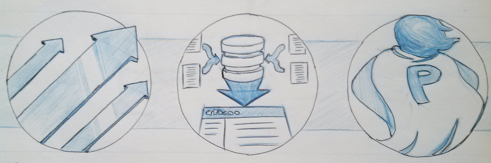
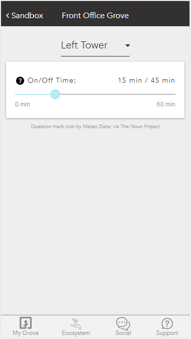

Nick Francisci
Engineer
I Engineer Products To Build Healthier Lives
-
At AthenaHealth, I worked with print operators and other stakeholders to design and implement web-tools to make printing easier, faster, and more reliable.
AthenaHealth promises to "let doctors be doctors" by removing the large bureaucratic overhead that reduces the time caregivers can spend giving care. The most mature and critical service Athena provides - Collector - shifts the burden of submitting insurance claims off of doctors. Claims are how doctors get paid, but they commonly take months for insurers to process and are often rejected on technicality. In addition to delaying doctor's cash flow, claims are inevitably dropped because of poor tracking or because they are not worth a doctor's time to contest. By becoming experts in working between doctors and payers, Athena's Collector team gets doctors paid more often and faster.
Despite Athena's effort to enable doctors and insurers to work fully electronically, some insurers require printed and mailed claims, especially for appeals on unpaid claims. That's where the print operations team comes in: a small group of dedicated Athenistas in Belfast, ME who efficiently and correctly print and mail over 50,000 claims each day. Athena's intern program embedded me within the development team that supports the print-operations team. Because printed claims are critical to the cash flow of doctors, the other three members of my development team were frequently called off of new development projects to maintain the infrastructure supporting print. In the daily hustle, 10 years had passed since the user-interfaces with which the print-operations team had worked were updated.
The tool that the print operators interfaced with to marshal print jobs and send them to printers was named commander. Commander was a tangled, 3000-line perl script that had suffered ten years of one-off maintenance hacks in order to provide the print operators with just enough functionality to print using a command-line interface. On the back-end, commander was largely run by pushing files to the right places, and had no communication with the AthenaNet database. My interviews with print operators, print managers, and the dev team swiftly revealed that each stakeholder was suffering from the poor infrastructure.
For the print operators, commander workflows were convoluted with many out of date options (eg. printer alignment settings that were wholly unused), needlessly complex interactions (eg. queuing each batch of claims in a print job with distinct commands), and lack of relevant information (eg. page counts). Commander impeded workflows when it should have accelerated them, and necessitated extra training time for new print-operators. For print operations management, commander did not offer simple reporting on print outcomes. For each of 9 types of print batches, the managers would receive a daily email with the information on the number of claims printed. For each monthly report and analysis, the managers would manually add up the line items in each of the 270 emails in order to create a spreadsheet. For the dev team supporting print operations, commander's convoluted code structure required extended dev-time for necessary updates and maintenance. More importantly, the lack of transparency in commander's status and reporting meant that when an error occurred in printing, the print operations team would need to contact the dev team to manually comb through the file structures supporting commander to find, diagnose, and repair the errored files. As I saw repeatedly during my internship, errors interrupted the workflows of all stakeholders.
From my stakeholder interviews, I developed three goals for a new print interface. First, I would streamline the workflows for print-operators by stripping out unused print options, making pertinent information on print batches available, and replacing the command-line interface with a web-interface instantly familiar to new operators. Second, I would automate reporting such that a print manager could at any time collate custom reports and export them to excel. Third, I would automate some error diagnosis and show print operators what had gone wrong with the eventual goal of empowering print operators to fix print errors without needing the dev team. Along the way, I also designed for maintainability, moving from file-structures to the database, from monolithic scripts into manageable subsystems, and from one-off if-statements to editable configuration files.

!------------------------------------------! Caption Photo !------------------------------------------!
Over the course of eight weeks, I made steady progress towards all of my stated goals, creating bare-bones interfaces to start and hooking features onto the framework in iterations such that I was able to release the current interface to the print operations team as I went. As I released features, I talked with the print-operations team to relate and receive feedback on both the current and next version. The privilege of being able to contact my stakeholders regularly allowed me to avoid (most) of the time I might waste building out features incorrectly or features that would remain unused. Along the way I received tremendous assistance from the print operations lead developer, who happily and tirelessly filled in gaps in my knowledge, arranged user-interviews, and discussed with me my infrastructural plans.
Thanks to the consistent support of my development team and the users for whom I was working, I was able to complete all major objectives within my eight week internship and hand-off a complete, maintainable web interface that achieved my goals of streamlining workflows, automating reporting, and empowering print-operations.
Note: Though I documented the project during my time at Athena, and presented upon it to an internal audience, I am prohibited by from displaying images of my work outside of Athena.
At Grove Labs, I built interfaces for the Grove OS mobile-optimized web-application to reduce user experience frictions and help users find their green-thumb.
When I arrived, the Grove OS web-application had been freshly constructed (v0.2). During my time there, I worked as one of only three front-end-focused engineers and helped take us to v0.5. My work in introducing new features to make the application feel native eventually uncovered roadblocks that led to a pivot in GroveOS to a fully mobile-native application. As one of only a few UI engineers, I was afforded a large degree of autonomy in selecting and completing those features that our lead UX-Designer and lead engineer had set out as priorities. Here, I discuss a few of those features I chose and implemented.
Pumps: Giving the User Control
Among my first projects, I decided to build an interface to control the water pumps of the Grove Ecosystems. The Grove Ecosystem's pumps were programmed to turn on for 30 minutes every hour to flood the plants with water, then turn off for 30 minutes to let the plants drain. In my discussions with the Grove ecologists, I learned that they had found greater success with a 15 minute on/45 minute off cycle. They were excited to publish their result to the Grove community, but the owners of ecosystems did not, in v0.2 have any control over their pump cycle. In addition to not being able to take the advice of our ecology team, the lack of pump controls held back our early adopter's ability to experiment: a common desire, and a core belief of Grove. To build out a rudimentary pump control would be a low-effort task that enabled our users a new dimension of control over their plant growing environment.
As I began my work, I learned that the API for controlling pumps was already in place, all that remained was the UI. I referenced our style for controlling lights, and used existing components where I could to create a simple page of similar design to the light controls. I included a slider for the pump on-time per cycle, and the cycle-duration. For example a 15 minute on/45 minute off cycle could be set with a cycle-duration of 60 minutes with an on-time of 15 minutes. I reasoned that users might appreciate the ability to tinker with longer cycle durations, for example trying a 15 minute on/105 minute off. I realized that for users who had never been able to touch the pump cycle before, these options may be confusing, so I also added a new component to Grove's code-base and to each pump control slider: a question mark icon that, on click, would show an explanatory modal for a control.
Upon bringing the new pump control feature to users, we found that the duration/on-time slider combination proved somewhat confusing to users at first glance. In the next release, I simplified it to a simple on-time/off-time slider out of 60 minutes. The resulting UI remained in Grove OS until it was depreciated at version 0.5 when Grove pivoted to a new code-base.

The Frame: Eliminating User Kick-Outs
Grove chose to build a web-application rather than a native phone application because it opened up the Grove OS to more users while requiring less development time. However, in doing so certain UX compromises were made. Because Grove OS was, to user's phones, an application, but not accessed via the browser, clicking a link from within the 'application' would kick the user out of Grove OS, open their web-browser and browse to the page. Grove's ecological team, user support team, and early access users had built a robust base of knowledge on the Grove community forum and Grove had built a marketplace for resupplying user's systems. Both the community and marketplace resided on external web-pages. The user kick-outs, in addition to being inconvenient and experience-breaking, prevented Grove from building bridges between the online knowledge base and relevant points in the application.
In order to smooth the users' transition between Grove OS and Grove's external resources, I settled upon using the (much maligned) iframe to build a simple browser window into GroveOS. Though it took me a while to fix issues with cross-origin requests coming from Grove OS frame to Grove's external web-pages, I was able to do so with some research and help from our lead engineer. Accompanying the frame itself, I added a component to Grove's library to replace default links. This new component would take the specified URL and navigate to that URL within the frame. At the same time, the frame would slide in from the bottom of the page. The frame contained an 'X' icon in the upper right hand corner that would slide the panel back to the bottom of the page, returning the user to precisely where they had been upon clicking the link. The frame also contained simple forward and back buttons for navigation. Simple though it was, the new frame maintained the illusion that Grove OS was native, and allowed Grove to begin to link the online community to the day-to-day interactions between users, their Groves, and Grove OS.

Reading Feedback: Granting Users a Green Thumb
To many of Grove's early access ecosystem owners, caring for a living aquaponic system is novel and oftentimes scary. Like new parents, many of our early access customers would ask questions in the vein of 'is this normal?', 'what should I do?'. A long-time dream at Grove continues to be granting a green thumb to even first-time gardeners. The first step of researching and publishing information on the particular ecology of Grove ecosystems was already undertaken by our ecology team. It remained for the development team to make that information as readily available to users as possible at the times it would be most important. I took on the project of doing so by adding instant feedback to user chemical readings taken from their system.
First, I talked extensively with Grove's stellar ecology team to build a configuration file with our most up-to-date knowledge regarding appropriate chemical ranges. I purposely designed this file such that the ecologists could adjust it as we learned more, without dev team intervention. I then built additional components into several reading and system-status related pages. These components provided instant feedback when a user entered a reading, informing them if the measurement was good or bad. Just telling a worried gardener about a problem without offering a solution has little use. Therefore, I included a link on each warning page to the relevant instructions on the Grove community forum, leveraging the frame I had previously created to make the experience seamless. Outside of the instant feedback panel, I included signifiers indicating that the most recent reading had been outside the ideal range as a reminder to take action. And lastly, I redid the reading detail page on my way through, upgrading it from the first iteration to the most recent lovely UI designs our UX lead had created.
The end result was a suite of feedback to ease the mind of novice aquaponic gardeners by providing either a confirmation that everything was alright, or an immediately actionable, persistent warning if not.